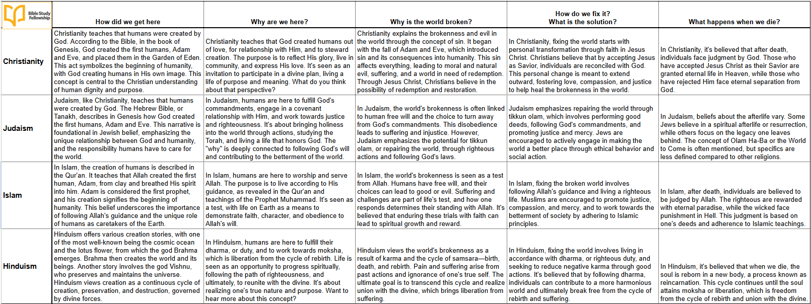

I made today a bit of a learning exercise, using Copilot's newer dialogue mode. We had almost an argument at first, because I asked it to give me the roughly ten questions that everyone — the majority of the world — eventually has to answer about existence. It kept dodging, insisting that was “a very personal decision” everyone had to work out with their own criteria. I knew it was just trying to be diplomatic, so I pushed back — I'd taken a class on worldviews, and there really are about ten broadly agreed-on questions every worldview has to answer. It kept resisting until I narrowed it down to five it finally admitted must be answered by any coherent worldview: how did we get here, why are we here, why is the world broken, how do we fix it, and what happens when we die.

I might be biased, but it sure seems to me that Christianity gives the most coherent, complete answers across all five. What I'd really like to do next is build a proper chart weighing not just the answers themselves but the evidence behind each one — when you line up the combined answers and the evidence supporting them, Christianity comes out far ahead for me, as it has every time I've walked through this exercise myself. I haven't built a chart like that in years, but it's on my list.
Comments